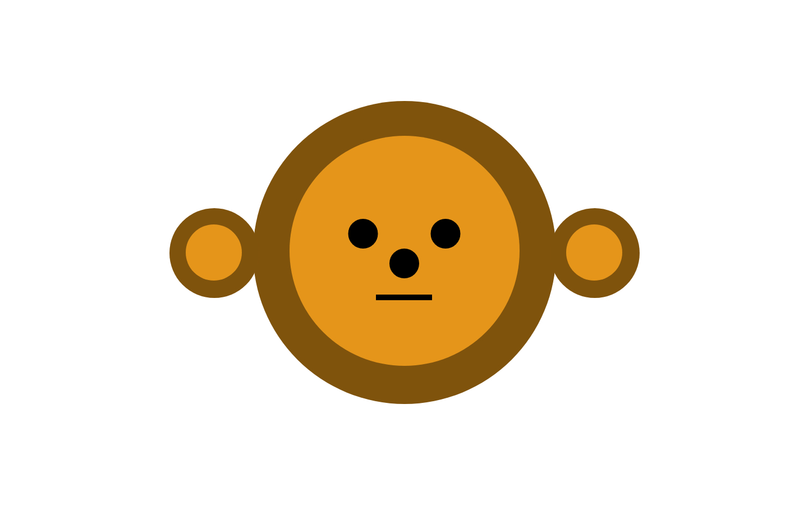

Instructions:
- Open XD
- Create a document with a width of 1440px and a height of 900px
- Using the circle tool, create a circle of 540px, with no border and fill it with hex code of #80530D and position it in the center of the page. This circle is called Face.
- Using the circle tool, create a circle of 410px, with no border and fill it with hex code of #E5961A and position it in the center of the page on top of the Face circle. This circle is called Inside Face
- Using the circle tool, create two pairs of circles of 160px, with no border and fill it with hex code of #80530D and position one on each side of the circle Face both aligned at the center line. This circles are called Ears.
- Using the circle tool, create two pairs of circles of 100px, with no border and fill it with hex code of #E5961A and position one inside each Ear circle aligned at the center line. This circles are called Inside ears.
- Using the circle tool, create a circle of 50px, with no border and fill it with hex code of #000000 and position it at 694px on the X axis and 443 on the Y axis. This circle is called Nose.
- Make two copies of the Nose circle and position them at 390px on the Y axis and move them 20px to each side from the Nose circle. This circles are called Eyes.
- Using the line tool, create a line with 10px size and a hex code of #000000 and position it at 670px on the X axis and 530px on the Y axis. This line is called Mouth.
- Save the file as a jpeg with the name monkey-face-remake.jpeg
- Send Miranda the file at mpg2448@masonlive.gmu.edu
Original Drawing

Drawing by Michelle